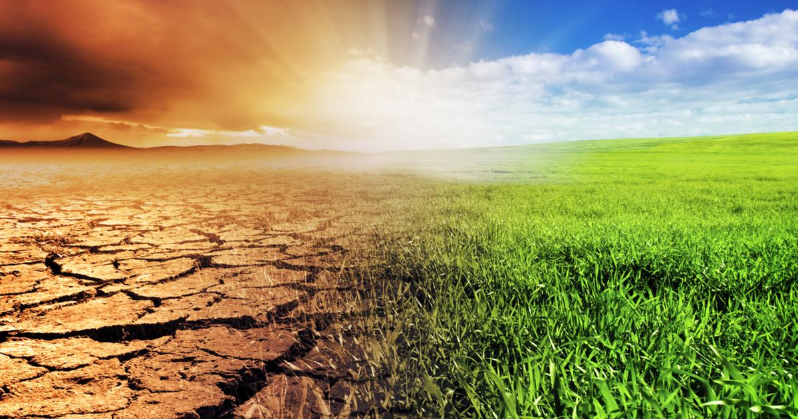
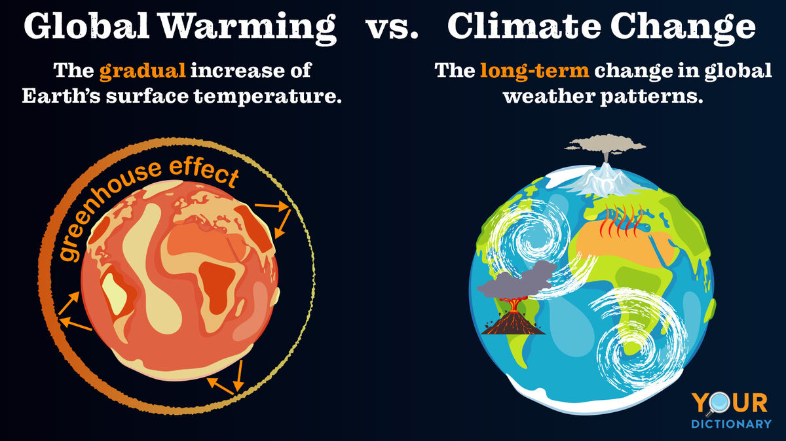

Global climate change, driven primarily by human activities such as the burning of fossil fuels and deforestation, is one of the most pressing environmental challenges of our time. Its effects are most prominently felt in vulnerable regions, including coastal areas, where rising sea levels threaten communities and infrastructure. Additionally, regions with limited resources and extreme climates, like Sub-Saharan Africa, face increased food insecurity and water scarcity due to shifting weather patterns. The consequences of global climate change are far-reaching, impacting ecosystems, economies, and societies worldwide, making it imperative for concerted global efforts to mitigate its effects and adapt to the changing climate.
The average annual increase in global temperatures vary from year to year but is typically measured in fractions of a degree Celsius. The precise rate of increase depends on various factors, including natural climate variability and human-induced greenhouse gas emissions. Over the past few decades, the average annual temperature rise has been approximately 0.2 to 0.3 degrees Celsius (0.36 to 0.54 degrees Fahrenheit). However, it's essential to note that while individual years may show variability, the long-term trend points to a consistent warming of our planet due to human activities, particularly the burning of fossil fuels. This gradual temperature rise underscores the urgency of global efforts to mitigate climate change and limit global warming to well below 2 degrees Celsius above pre-industrial levels, as outlined in international agreements like the Paris Agreement.
Climate change and global warming are related but distinct phenomena within the broader context of environmental shifts. Global warming specifically refers to the long-term increase in Earth's average surface temperature, primarily due to the accumulation of greenhouse gases in the atmosphere, such as carbon dioxide and methane. It acts as a significant driver of climate change. On the other hand, climate change encompasses a broader range of alterations in climate patterns and conditions, which can include shifts in temperature, precipitation, sea levels, and extreme weather events. While global warming is a critical component of climate change, climate change also encompasses various other environmental impacts, making it a more comprehensive term that acknowledges the multifaceted nature of alterations in the Earth's climate system. In essence, global warming is one facet of the larger phenomenon of climate change, with the latter encompassing a more comprehensive array of climate-related transformations.
NASA, the United States' premier space agency, underscores the global and far-reaching consequences of climate change. Their extensive research and satellite observations have unequivocally shown that climate change is a worldwide phenomenon impacting every corner of our planet. Over the last century, NASA has documented a persistent rise in global temperatures, largely attributable to the accumulation of greenhouse gases in Earth's atmosphere, particularly carbon dioxide. This warming trend contributes to a host of interconnected challenges, from the melting of polar ice and glaciers to rising sea levels, intensifying extreme weather events, and disrupting ecosystems worldwide. NASA's commitment to international collaboration ensures that its findings contribute to a comprehensive global understanding of climate change, reinforcing the urgency of collective action to mitigate its impacts and build a sustainable future for our planet.
The endorsement of this petition is a crucial step toward urging governments to support and promote organic farming methods. Organic agriculture represents a pivotal move toward a more sustainable and environmentally responsible future. By reducing the reliance on synthetic pesticides and fertilizers, organic farming not only protects the health of our soils but also safeguards the well-being of ecosystems and biodiversity. As concerned citizens, it is imperative for all of us to join in this collective effort and advocate for governments to invest in and incentivize organic farming practices. By doing so, we enable our agricultural systems to thrive while mitigating the detrimental effects of conventional agriculture on our planet. Let us unite in our commitment to a greener and more ecologically sound approach to farming by signing this petition and advocating for the widespread adoption of organic methods.
🖊️ Teresa from Harlem supports this.
🖊️ 3 people have signed this petition and support this cause.